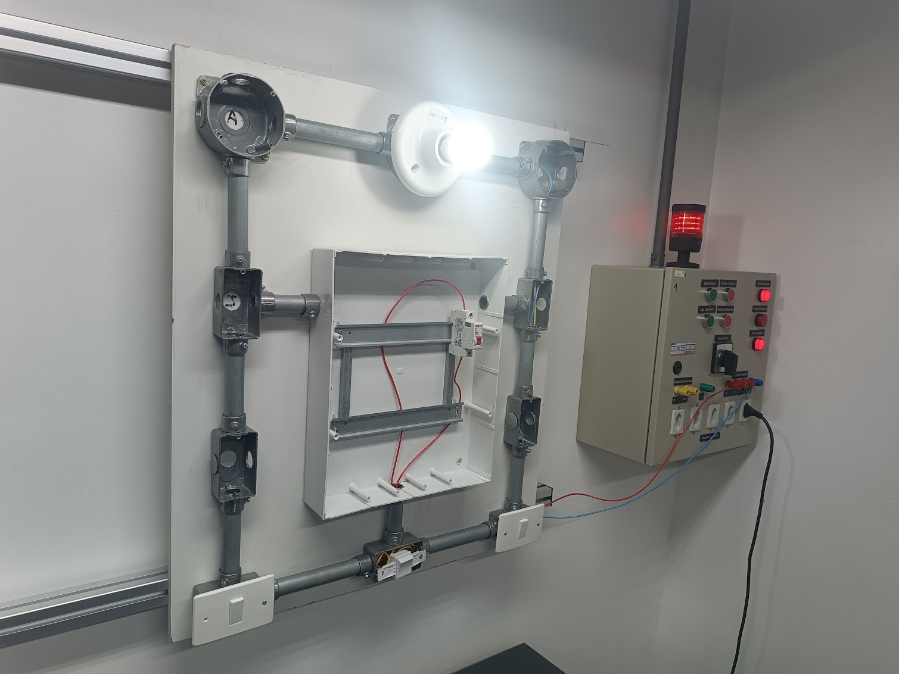
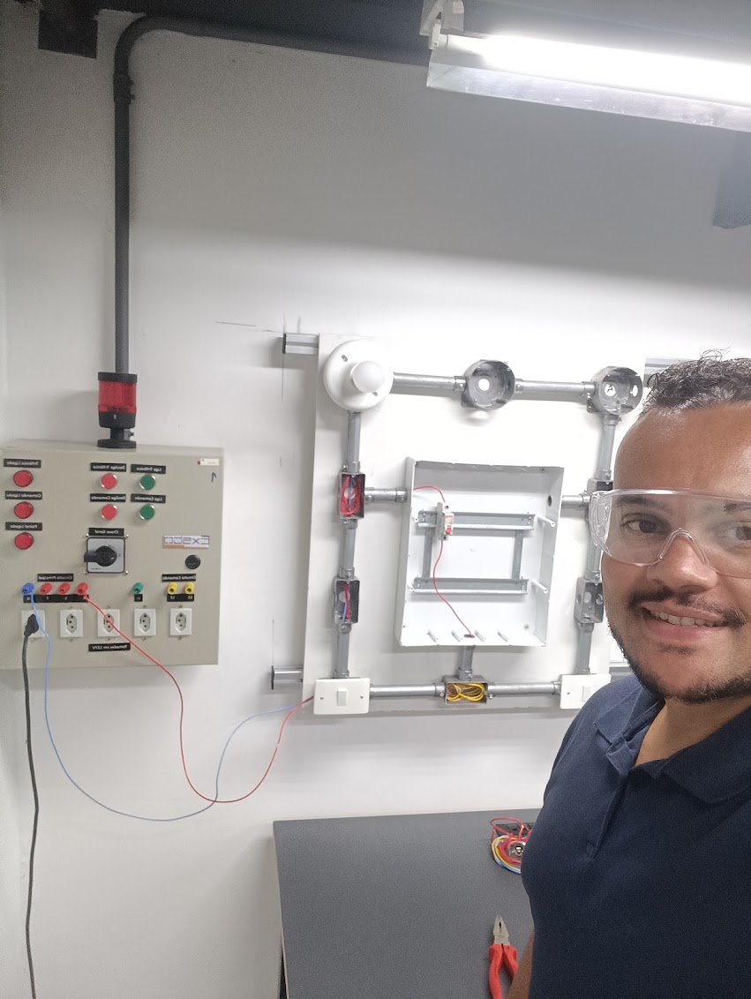
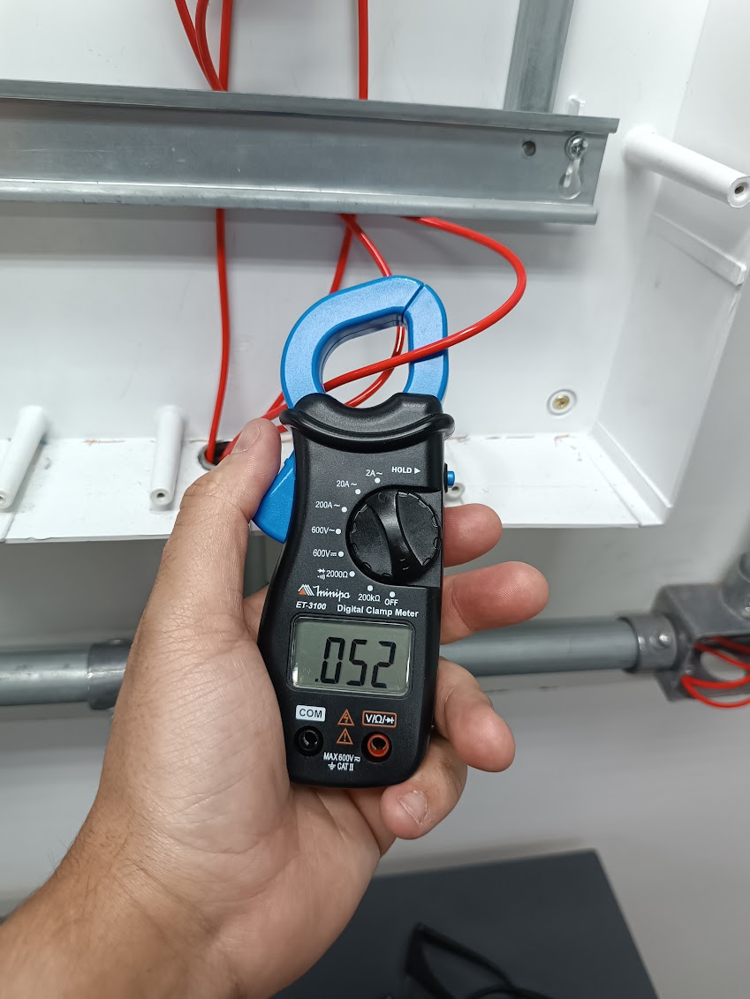
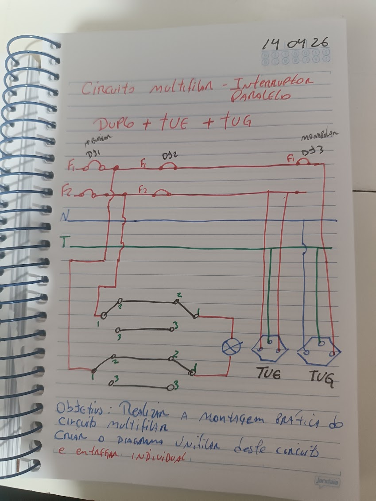
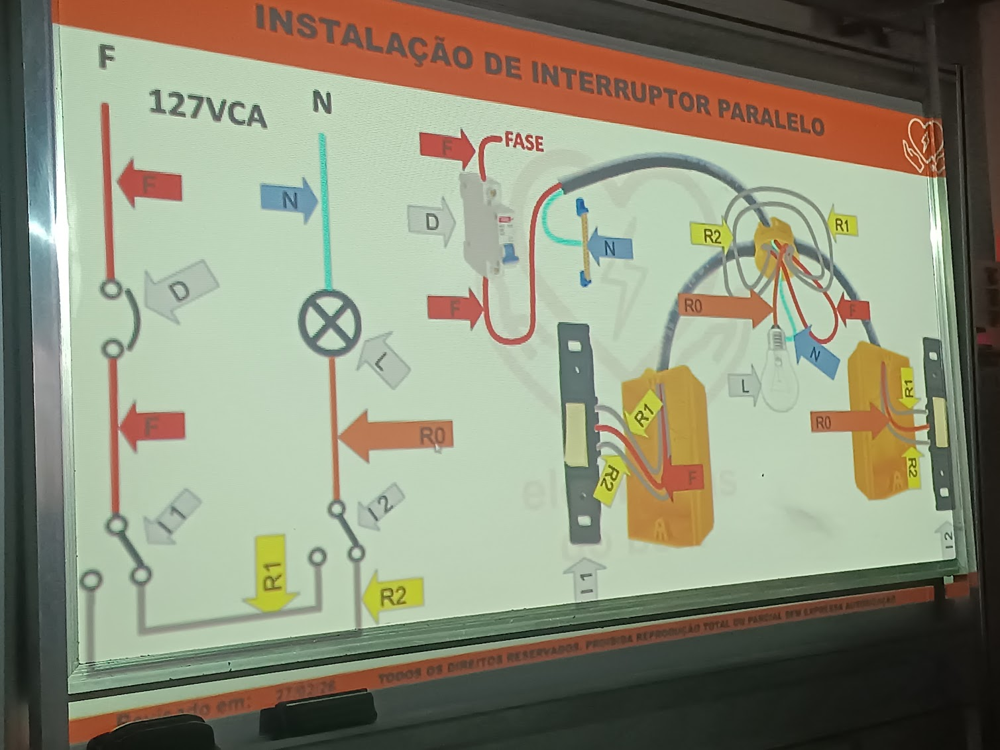

Montagem e teste de circuito
Montagem e teste de circuito de iluminação em bancada didática, relacionando o diagrama com as conexões físicas e verificando seu funcionamento.
Curso de aperfeiçoamento profissional — SENAI — 80 horas

Concluí o curso de Reparação em Instalações Elétricas na Escola SENAI “Anchieta”, em São Paulo, realizado entre março e abril de 2026, com carga horária total de 80 horas.
A formação proporcionou contato teórico e prático com instalações elétricas residenciais e comerciais, incluindo interpretação de diagramas, montagem de circuitos, utilização de componentes elétricos, realização de testes e identificação de possíveis falhas.
O curso representa uma formação complementar à minha trajetória atual como estudante de Técnico em Refrigeração e Climatização, área em que os conhecimentos elétricos são importantes para compreender o funcionamento, a instalação e a manutenção dos equipamentos.
Durante o curso, tive contato com fundamentos e atividades relacionados a:
Esses conhecimentos representam uma base inicial em instalações elétricas, que continuo desenvolvendo por meio do curso Técnico em Refrigeração e Climatização e de estudos relacionados à eletricidade aplicada, comandos elétricos e automação.
As atividades realizadas no SENAI permitiram relacionar os diagramas elétricos com a montagem física dos circuitos. Os registros abaixo apresentam alguns dos exercícios, testes e medições realizados durante a formação.

Montagem e teste de circuito de iluminação em bancada didática, relacionando o diagrama com as conexões físicas e verificando seu funcionamento.

Utilização de alicate amperímetro durante os testes do circuito, observando a seleção correta da função do instrumento e os procedimentos de segurança.

Elaboração de diagrama para orientar a montagem prática de circuito com iluminação, tomadas e identificação dos condutores.

Estudo da distribuição dos condutores e do acionamento de pontos de iluminação por interruptores instalados em diferentes posições.
O principal aprendizado do curso foi compreender que uma instalação elétrica deve ser analisada como um sistema, considerando o diagrama, os componentes, as conexões, os dispositivos de proteção e os procedimentos de segurança.
A formação também ampliou minha capacidade de interpretar circuitos, identificar componentes e compreender a parte elétrica presente em equipamentos e sistemas de refrigeração.
Este curso representa uma base técnica inicial e um primeiro contato prático com instalações elétricas. Continuo aprofundando esses conhecimentos durante minha formação técnica no SENAI.
Certificado de conclusão emitido pelo SENAI São Paulo, referente ao curso de 80 horas realizado entre 24 de março e 30 de abril de 2026.